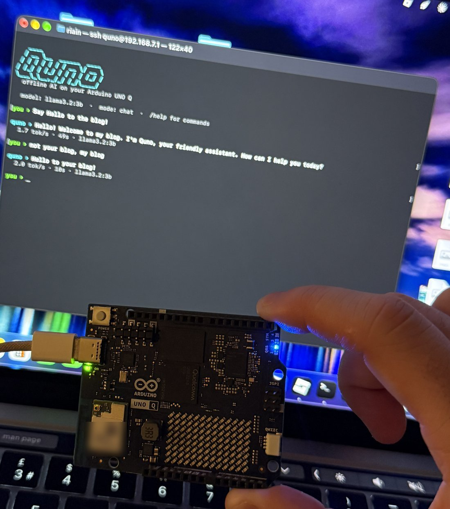
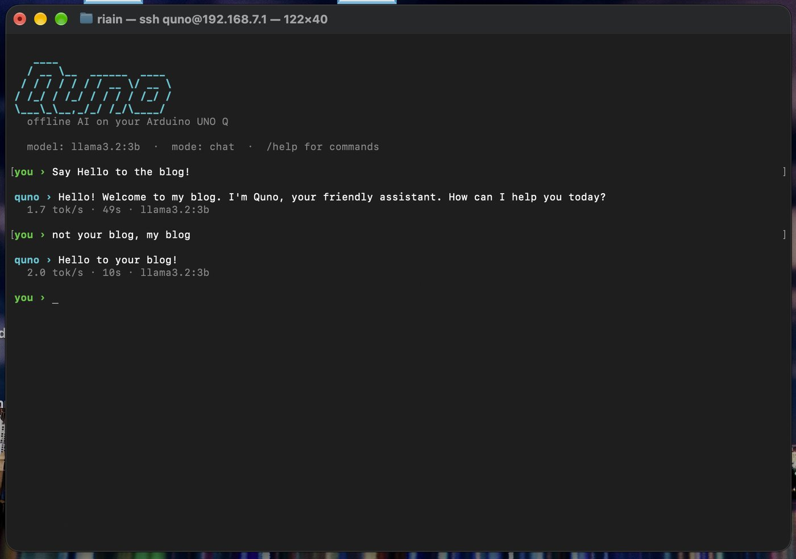
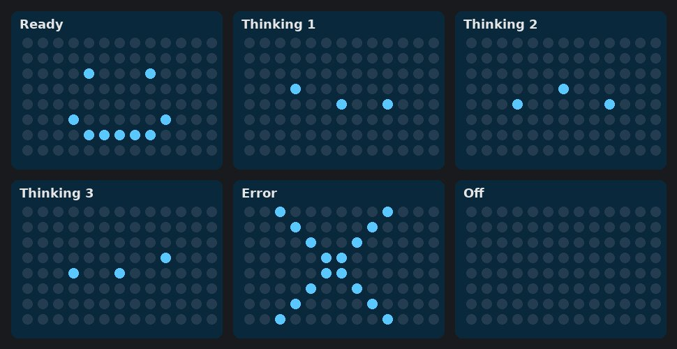
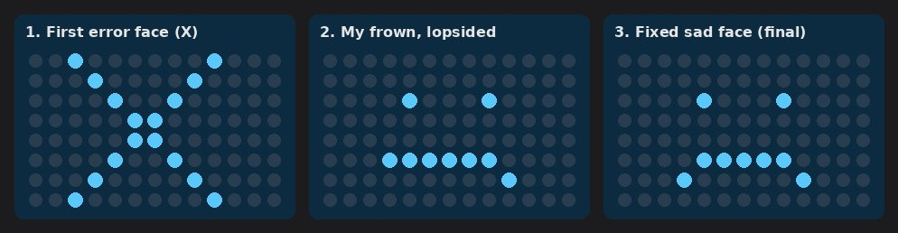

Log 001 · 28 Oct 2026
Quno: An Offline AI on an Arduino UNO Q
Expected outcome
I wanted an Arduino that runs its own AI, with no internet and no cloud. I'd plug it into any computer, open a terminal, and chat with it.
The board is an Arduino UNO Q 4GB, which I named Quno. It has two halves: a small Linux computer and a classic Arduino microcontroller that drives a built-in 13x8 LED matrix. My plan was:
- Run a language model on the board using Ollama, with Meta's
llama3.2:3bmodel. - Chat from the terminal only, with no browser.
- Connect with just the USB cable, so Wi-Fi isn't needed.
- Use the LED matrix as a face that shows what the AI is doing.

Where the ideas came from
The starting point was the Arduino Project Hub guide "Build Smarter with Claude Code & Ollama on UNO Q". It showed that the UNO Q can run Ollama, and it paired it with Claude Code as a coding helper.
I took the core idea and changed it as I went:
- A coding helper, but without Claude Code. I wanted everything offline, so I built my own chat app called Quno, with a coding mode.
- A "homepage" for the AI. I first pictured a web page, then decided I'd rather do everything in the terminal.
- The LED matrix was already on the board, so it made sense to use it as a status face.
- USB-only access came from wanting it to work anywhere, even without Wi-Fi.
- Robot arm control is a future idea: type to Quno and have it move servos.
How it was built
- Installed Ollama and llama3.2:3b on the board. The download failed at first because the disk was full. Clearing old App Lab files and moving the models to a bigger partition fixed it.
- Built the Quno chat app. It's a small Python program that runs on the board. It has a chat mode, a coding mode, a model switcher, and shows how fast each reply was.
- Tried to make Terminal open by itself on plug-in. The board can't pretend to be a keyboard, so I dropped this idea.
- Set up USB networking. The board now appears as a network adapter over the cable at
192.168.7.1. It needed one extra fix to keep working after a restart. - Made a one-line login. Typing
ssh quno@192.168.7.1on any computer opens Quno straight away, with a clean screen. - Built the LED faces in Arduino App Lab. There's a smiley for ready, moving dots for thinking, and a sad face (my own design) for errors. The chat app switches between them.



What I struggled to understand
| What confused me | What made it click |
|---|---|
| Which terminal I was typing in | I sometimes ran board commands on my Mac and the other way round. Checking the prompt first solved it: arduino@Quno means the board. |
| What ssh actually does | When I connect, my computer is just a screen and keyboard. The AI runs entirely on the board's own hardware. |
| Why a new computer asks to "Allow accessory" | Each computer checks a new USB device once, and ssh checks the board's identity once. After that it's quiet. |
| The two halves of the board | Linux runs the AI and the chat. The microcontroller runs the sketch that draws the faces. They talk through the Arduino "Bridge". |
| Why the app needed a Python file | An App Lab app has a sketch half and a Python half. The Python only had to keep the app alive, which takes 2 lines. |
| Why the faces vanished after unplugging | An App Lab app only starts by itself if "Run at startup" is switched on. |
| Why the faces didn't change during chat at first | I had copied an older version of the chat app onto the board. |
| The LED code | 7 means full brightness. A for loop draws a line of pixels, and rows count from 0 at the top. |
| Offline vs online AI | Quno never sends my chats anywhere. An online AI like Claude would need Wi-Fi and an API key, and wouldn't know about my offline chats. |
Things I learned
- Small boards can run real AI, slowly. llama3.2:3b manages about 1.7 tokens (word pieces) per second, so a short answer takes about 40 seconds. It's slow but completely private.
- Storage matters. AI models are big, and a full disk stops everything. Knowing where space lives on the board saved the project.
- Linux basics. I learned about logins, services that start at boot, and how to copy files to the board.
- ssh and USB networking. A USB cable can carry a network connection, which is why ssh works without Wi-Fi.
- Arduino sketches. I learned how a sketch draws on an LED matrix pixel by pixel, and designed my own error face.
- How the two halves of the UNO Q talk. Linux sends a message through the Bridge, and the sketch reacts.
- Security habits. My password got shown in a chat once, so I changed it straight away.
Final outcome
Quno works the way I imagined. I plug the board into any computer, type ssh quno@192.168.7.1, and I'm chatting with an AI that runs entirely on the Arduino, with no internet. The LED matrix smiles when it's ready, shows moving dots while it thinks, and frowns if something goes wrong.
| Goal | Result |
|---|---|
| AI running on the board | Done llama3.2:3b through Ollama |
| Terminal-only chat | Done my own Quno app, with chat and coding modes |
| Works with just a USB cable | Done and tested on a second laptop |
| Short command for any computer | Done ssh quno@192.168.7.1 |
| LED status faces | Done built in App Lab |
| Terminal opens by itself on plug-in | Dropped the board can't act as a keyboard |
Next, I'd like to control a robot arm by typing to Quno, starting with a single SG90 servo. I might also add Claude as an optional online mode, kept separate from my offline chats.
← All entries